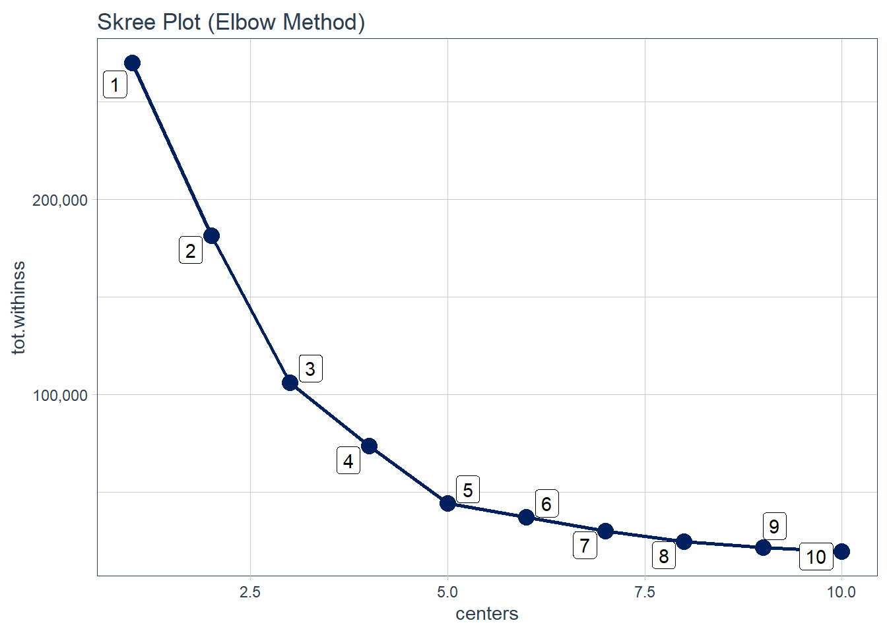

#Load in libraries
library(rio)
library(tidyverse)
library(skimr)
library(tidyquant)
library(broom)
#Import the dataset
customers_tbl<- rio::import("Mall_Customers.csv")Customer Segmentation Analysis of Retail Data
Sections
1. Introduction
Customer segmentation is a valuable approach for understanding and connecting with diverse customer groups. This involves categorizing customers into different segments based on shared characteristics such as age, gender, interests, and spending habits. This method enables companies to gain insights into customer profiles, identify target audiences, and provide actionable information to tailor their marketing strategies.
In the context of this project, we will explore retail customer data, utilizing the K-means clustering to determine the most effective method of categorizing customers based on certain criteria or features. The aim is to explore the fundamentals of clustering, an unsupervised machine learning method that autonomously organizes data into clusters of similar items without predefined labels.
2. About Dataset
This dataset focuses on retail customers, providing details such as customer ID, age, gender, income, and spending score. The objective is to leverage retail customer data to determine how to divide the consumer population into the ideal group of clusters.
The data can be accessed here.
#View datatypes
glimpse(customers_tbl)Rows: 200
Columns: 5
$ CustomerID <int> 1, 2, 3, 4, 5, 6, 7, 8, 9, 10, 11, 12, 13, 14…
$ Gender <chr> "Male", "Male", "Female", "Female", "Female",…
$ Age <int> 19, 21, 20, 23, 31, 22, 35, 23, 64, 30, 67, 3…
$ `Annual Income (k$)` <int> 15, 15, 16, 16, 17, 17, 18, 18, 19, 19, 19, 1…
$ `Spending Score (1-100)` <int> 39, 81, 6, 77, 40, 76, 6, 94, 3, 72, 14, 99, …Here is a preview of the retail customer data:
head(customers_tbl) CustomerID Gender Age Annual Income (k$) Spending Score (1-100)
1 1 Male 19 15 39
2 2 Male 21 15 81
3 3 Female 20 16 6
4 4 Female 23 16 77
5 5 Female 31 17 40
6 6 Female 22 17 763. Exploratory Data Analysis
The dataset consists of 200 rows and 5 columns. There are no missing values.
skim(customers_tbl)| Name | customers_tbl |
| Number of rows | 200 |
| Number of columns | 5 |
| _______________________ | |
| Column type frequency: | |
| character | 1 |
| numeric | 4 |
| ________________________ | |
| Group variables | None |
Variable type: character
| skim_variable | n_missing | complete_rate | min | max | empty | n_unique | whitespace |
|---|---|---|---|---|---|---|---|
| Gender | 0 | 1 | 4 | 6 | 0 | 2 | 0 |
Variable type: numeric
| skim_variable | n_missing | complete_rate | mean | sd | p0 | p25 | p50 | p75 | p100 | hist |
|---|---|---|---|---|---|---|---|---|---|---|
| CustomerID | 0 | 1 | 100.50 | 57.88 | 1 | 50.75 | 100.5 | 150.25 | 200 | ▇▇▇▇▇ |
| Age | 0 | 1 | 38.85 | 13.97 | 18 | 28.75 | 36.0 | 49.00 | 70 | ▆▇▅▃▂ |
| Annual Income (k$) | 0 | 1 | 60.56 | 26.26 | 15 | 41.50 | 61.5 | 78.00 | 137 | ▆▇▇▂▁ |
| Spending Score (1-100) | 0 | 1 | 50.20 | 25.82 | 1 | 34.75 | 50.0 | 73.00 | 99 | ▃▃▇▃▃ |
First, we looked at how age differ between men and women. The age range from 18 to 70. Here’s what we found:
The most common age range for both male and female retail shoppers is 25-35, providing valuable insights into the core demographic.
Among female shoppers, there’s another noticeable group around the age of 45.
However, males tends to shop less as they approach the age of 70.
summary(customers_tbl$Age) Min. 1st Qu. Median Mean 3rd Qu. Max.
18.00 28.75 36.00 38.85 49.00 70.00 customers_tbl %>%
select(CustomerID,Gender,Age) %>%
ggplot(aes(Age, fill = Gender)) +
geom_density(alpha = 0.5) +
scale_fill_tq() +
theme_tq() +
theme(legend.position = "bottom") +
labs(
title = "Distribution of Age by Gender"
) Second, we will explore the other two attributes: spending score and annual income.
The spending score, graded on a scale from 1 to 100, offers valuable insights into customer behavior.
The annual income seems to average around $60,000, while the spending score averages around 50.
There are some high annual incomes, around the $125,00,000 mark, indicating the presence of customers with high income levels.
summary(customers_tbl$`Spending Score (1-100)`) Min. 1st Qu. Median Mean 3rd Qu. Max.
1.00 34.75 50.00 50.20 73.00 99.00 summary(customers_tbl$`Annual Income (k$)`) Min. 1st Qu. Median Mean 3rd Qu. Max.
15.00 41.50 61.50 60.56 78.00 137.00 customers_tbl %>%
gather(key = "variable", value = "value", `Spending Score (1-100)`, `Annual Income (k$)`) %>%
ggplot(aes(x = variable, y = value, fill = variable)) +
geom_boxplot() +
scale_fill_manual(values = c("#18BC9C", "#CCBE93")) +
labs(fill = "") +
theme_tq() +
labs(
title = "Examining Outliers of Spending Score and Annual Income"
)Analyzing the distributions provides insights into our customers’ age, annual incomes, and spending habits:
All 3 distributions seems to be normally distributed, with slight skewness. The Spending Score visual seems to follow this pattern the most closely.
Looking at the Age visual, we notice that the majority of our customers are between 20 and 40 years old.
Examining the Annual Income visual, it appears that a significant number of people earn in the range of 60-70K.
This kind of information is valuable as it gives us a snapshot of the typical customer profile and helps us understand our customer base better.
customers_tbl %>%
gather(key = "variable", value = "value", Age, `Annual Income (k$)`, `Spending Score (1-100)`) %>%
ggplot(aes(x = value, fill = variable)) +
geom_histogram(binwidth = 5, alpha = 0.7, position = "identity", color = "white") +
scale_fill_manual(values = c("Age" = "#2C3E50", "Annual Income (k$)" = "#18BC9C", "Spending Score (1-100)" = "#CCBE93")) +
facet_wrap(~ variable, scales = "free") +
theme_tq()+
labs(
fill = "",
)Next, we will classify income in low, medium, and high categories. The income classifications are defined as follows:
Low Income: Annual incomes below $40,000.
Medium Income: Annual incomes ranging between $40,000 and $75,000.
High Income: Annual incomes exceeding $75,000 or more.
Based on the visualization, a significant portion of our customers fall within the category of median-income earners.
# Determine income classification values using quantiles
quantiles <- customers_tbl %>%
pull(`Annual Income (k$)`) %>%
quantile(probs = c(0, 0.25, 0.50, 0.70, 1))
# # Categorize customers into income bins
customers_income_groups <- customers_tbl %>%
mutate(income_bin = case_when(
`Annual Income (k$)` <= quantiles[2] ~ "low",
`Annual Income (k$)` <= quantiles[4] ~ "medium",
TRUE ~ "high"
)) %>%
mutate(income_bin = factor(income_bin, levels = c("low", "medium", "high")))%>%
group_by(income_bin) %>%
## Calculate count of customers in each income bin
summarize(count = n()) %>%
ungroup()# Create a bar chart
customers_income_groups %>%
ggplot(aes(x = income_bin, y = count)) +
geom_col(position = "dodge", width = 0.7, fill = "#2C3E50") +
theme_tq() +
labs(
x = "Income",
title = "Customer Distribution Across Income Categories")
4. K-Means Clustering
Now, let’s explore whether this method can group customers into distinct categories based on their annual income and spending score.
To begin, we need to figure out the optimal number of clusters for our analysis, and we employ a technique known as the elbow method. The Skree plot indicates that dividing our consumer population into five groups would be ideal. This choice is made by identifying the spot on the plot where the decrease in how much the data varies within each group starts to slow down, creating a bend similar to the curve of an elbow.
# Select relevant columns for clustering
customers_seg_tbl <- customers_tbl %>%
select(CustomerID, `Annual Income (k$)`, `Spending Score (1-100)`)
# Create a function to perform k-means clustering
kmeans_fxn <- function(centers = 3)
{
customers_seg_tbl %>%
select(-CustomerID) %>%
kmeans(centers = centers, nstart = 100)
}
# Assume the max number of cluster is 10
kmeans_fxn_tbl <- tibble(centers = 1:10) %>%
mutate(k_means = centers %>% map(kmeans_fxn)) %>%
mutate(glance = k_means %>% map(glance))
# Create a Skree Plot (elbow method) to find the optimal value of K
kmeans_fxn_tbl%>%
unnest(glance) %>%
select(centers, tot.withinss) %>%
ggplot(aes(centers,tot.withinss))+
geom_point(size = 4, color = "#001f5f")+
geom_line(linewidth = 1,color = "#001f5f")+
ggrepel::geom_label_repel(aes(label = centers))+
scale_y_continuous(labels = scales::comma)+
theme_tq()+
labs(
title = "Skree Plot (Elbow Method)"
)
Now that we’ve figured out the best number of groups, let’s dive into the k-means process. It kicks off by randomly selecting some customers and labeling them as the starting points for our groups. Imagine these starting points as the initial representatives of our different customer categories.
Next, the algorithm takes a look at all the other customers and assigns each one to the group whose starting point is closest to them. We call this step “cluster assignment.” It’s like putting each customer into the category that are most similar to them.
After this, the algorithm calculates new average values for each group. These averages represent what a typical customer in each group looks like in terms of income and spending habits. Then, it checks if any customers might fit better in a different group based on these updated averages. This back-and-forth process repeats several times until the assignments stop changing. It’s like fine-tuning the groups to make sure each one captures a distinct set of customer characteristics. This process repeats through multiple iterations until the assignments no longer change.
# Set a seed for reproducibility
set.seed(123)
# Performing K-Means
kmeans_customers_obj <- customers_seg_tbl %>%
select(-CustomerID)%>%
kmeans(centers = 5, nstart = 100)
#Assign the cluster assignment for each brand
kmeans_5_clusters<- kmeans_customers_obj %>% augment(customers_seg_tbl) %>%
select(CustomerID, .cluster) %>%
left_join(customers_seg_tbl, by = "CustomerID")
kmeans_customers_obj$centers Annual Income (k$) Spending Score (1-100)
1 55.29630 49.51852
2 26.30435 20.91304
3 25.72727 79.36364
4 88.20000 17.11429
5 86.53846 82.12821#Create visual
kmeans_5_clusters %>%
ggplot(aes(x = `Annual Income (k$)`, y = `Spending Score (1-100)`, color = factor(.cluster)))+
geom_point(size=2) +
theme_tq() +
scale_color_tq() +
labs(
title = "Customer Segmentation Based on Annual Income and Spending Score",
color = "Customer Groups"
) +
scale_x_continuous(breaks = seq(0, 150, by = 25)) +
theme(legend.position = "right")5. Interpretation
The objective of employing a clustering model is to gain valuable insights into customer segmentation. By categorizing customers into five distinct segments based on spending score and annual income, we can derive tailored marketing strategies for each group.
Examining the segmentation below reveals the following customer groups:
- Average annual income (between $40,000 - $70,000) and average spending score (between 35 and 65)
- Low annual income (below $35,000) and low spending score (below 35)
- Low annual income (below $35,000) and high spending score (above 65)
- High annual income (above $75,000) and low spending score (below 35)
- High annual income (above $75,000) and high spending score (above 65)
Understanding these customer segments enables companies to make more informed decisions. For instance, strategic marketing approaches can be devised for customers with high annual income but low spending scores, potentially elevating their interest and transforming them into higher spenders. Attention should also be directed toward retaining the loyalty of existing customers.
This analysis demonstrates how clustering algorithms, even with just two variables (income and spending score), can provide meaningful insights and recommendations. In a real-world business scenario, the inclusion of additional variables could yield even more realistic and business-specific insights.